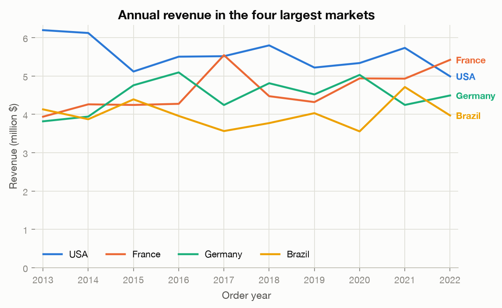
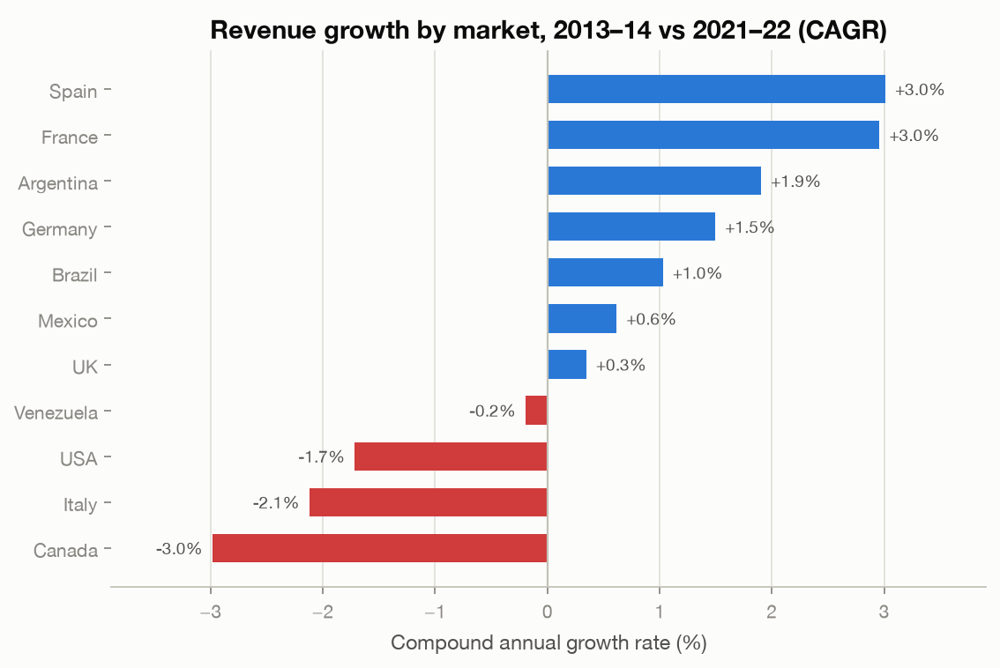
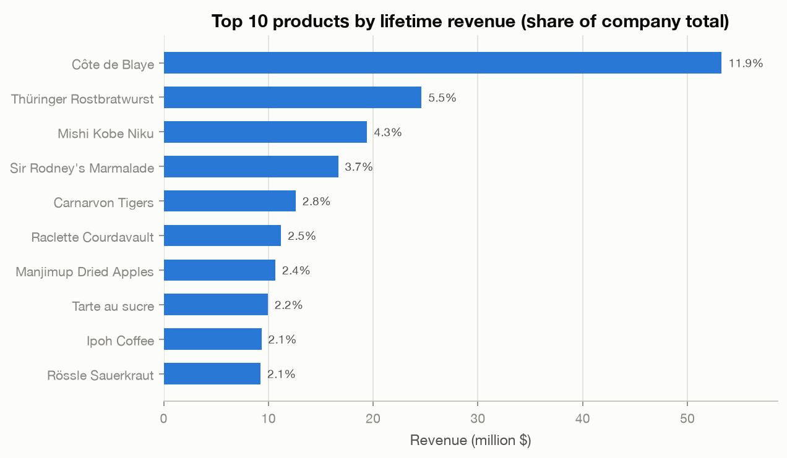
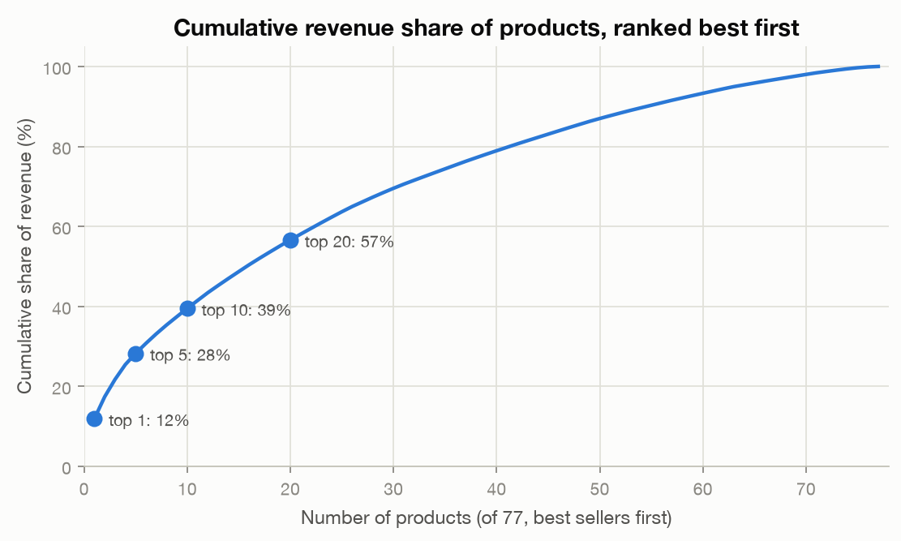
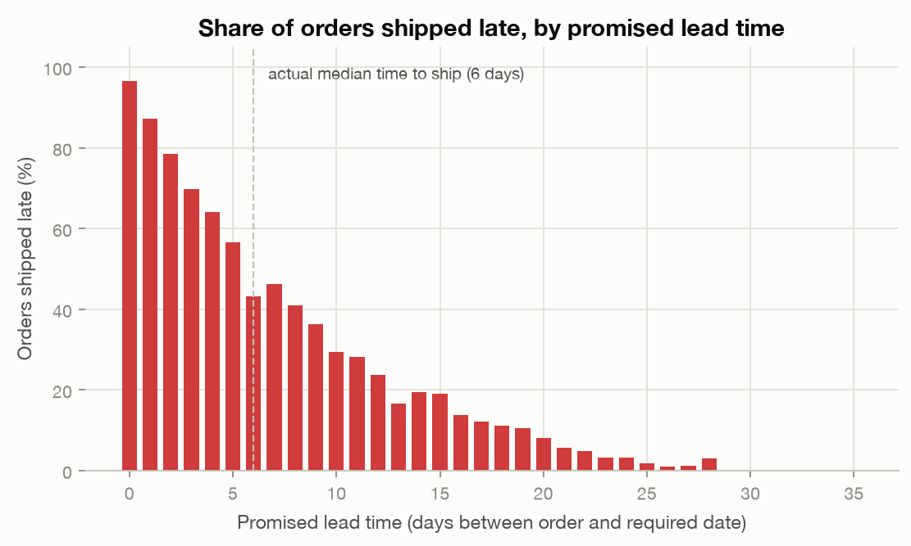
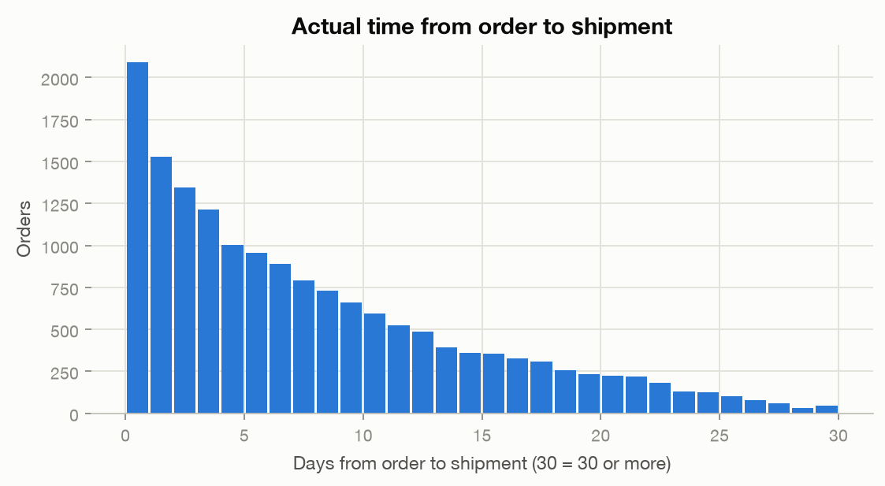

Northwind Business Analysis
15.561 HW 3 — AI-Assisted Business Data Analysis · Hang Zhao
This page advises a manager of the trading company represented in the Northwind database: 16,282 orders and 609,283 order lines from 93 customers in 21 countries, placed between July 2012 and October 2023, roughly $448M of lifetime revenue across 77 food-and-beverage products. Three questions connect the data to decisions about where to sell, what we depend on, and how we deliver. All numbers and charts are produced by the Python scripts in the GitHub repository; trend comparisons use complete calendar years (2013–2022) only, because 2012 and 2023 are partial years in the data.
Q1 · Which markets are growing, and where should sales attention go?
Why it matters: Sales headcount and marketing budget follow revenue history by default, which quietly over-invests in large-but-stalling markets. Knowing which countries are actually growing tells us where the next dollar of sales effort earns the most.
Approach: Sum order-line revenue (unit price × quantity × (1 − discount)) per customer country per year. To rank markets without being whipsawed by single-year noise, compare the average of the first two complete years (2013–14) with the last two (2021–22) as a compound annual growth rate, for the 11 markets with at least $10M of lifetime revenue.


Main finding: The largest market is the one losing ground: USA revenue declined about −1.7% per year (from ~$6.2M in 2013 to ~$5.0M in 2022), and France — growing at +3.0%/yr — overtook it in 2022. Spain (+3.0%/yr) and Argentina (+1.9%/yr) are the fastest-growing mid-size markets, while Canada (−3.0%/yr) and Italy (−2.1%/yr) are shrinking.
Business implication: Rebalance sales coverage toward France and Spain, where momentum is positive, and treat the USA as a retention problem — diagnose whether the decline is customer churn, order frequency, or basket size before spending more on acquisition there. Canada and Italy are small and shrinking: serve them efficiently rather than invest.
Q2 · How dependent is revenue on a few products?
Why it matters: Concentration is invisible in day-to-day operations but decisive in a crisis: if one product dominates revenue, a supplier failure, a price shock, or a competitor cloning that product endangers the whole P&L. It also tells procurement where supply contracts deserve redundancy.
Approach: Rank all 77 products by lifetime discounted revenue, compute each product's share of the $448M total, and trace the cumulative share curve (a Pareto analysis). Two views: the top-10 bar ranking and the full cumulative curve.


Main finding: A single premium wine, Côte de Blaye, generates $53.3M — 11.9% of all revenue and 2.2× the #2 product. The top 5 products carry 28% and the top 20 carry 57% of revenue; the bottom half of the catalog (38 products) contributes under 20%.
Business implication: Côte de Blaye deserves key-account treatment on the supply side: a secondary supplier or inventory buffer, and margin monitoring, because a 10% stumble in this one SKU moves total revenue by more than a percentage point. At the other end, the long tail of ~38 slow products is a catalog-rationalization candidate — each adds inventory and ordering overhead while contributing almost nothing.
Q3 · Why are 23% of orders shipped late — and can we fix it?
Why it matters: Late shipments erode customer trust and invite penalty clauses. Before spending on carriers or warehouse capacity, we need to know whether lateness is a capacity problem, a carrier problem, or a promising problem.
Approach: For all 16,261 shipped orders, compute the promised lead time (required date − order date) and the actual fulfillment time (shipped date − order date). Compare the late-shipment rate across promised lead times, and check whether urgent orders are actually processed faster. Carrier differences were tested and ruled out: all three shippers show the same ~23% late rate and ~6-day median.


Main finding: Lateness is a promising problem, not a shipping problem. Orders promised within 7 days are late 65.6% of the time; orders promised 29+ days are never late. Yet the warehouse ships urgent and relaxed orders at exactly the same speed — median 6 days in both groups. The fulfillment pipeline simply does not react to urgency, and no carrier is better or worse (all three: ~23% late, ~6-day median).
Business implication: Two levers, both cheap compared with buying capacity: (1) stop accepting required dates inside ~10 days unless an expedite process exists — at current processing speed those promises fail more often than they succeed; (2) create an actual expedite lane that prioritizes short-deadline orders through picking and dispatch. Either would cut the 23% late rate substantially without touching carriers, which the data shows are interchangeable.